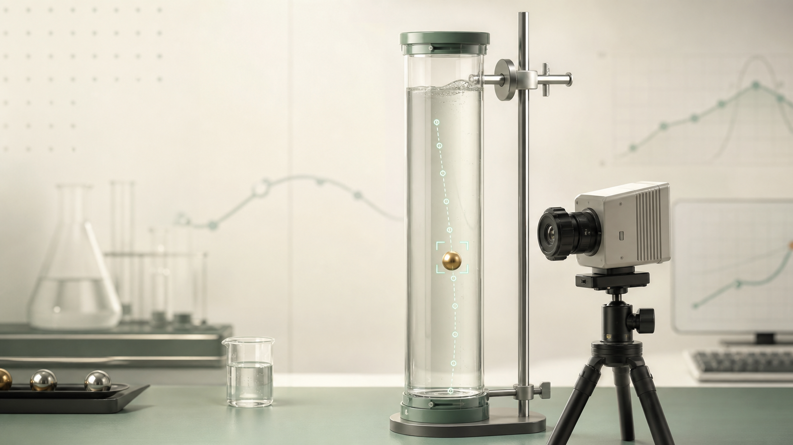
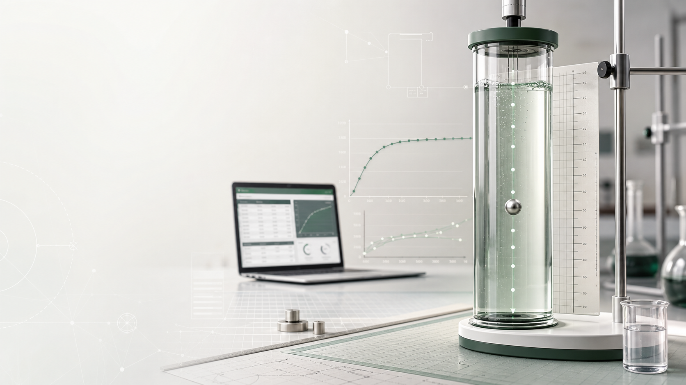
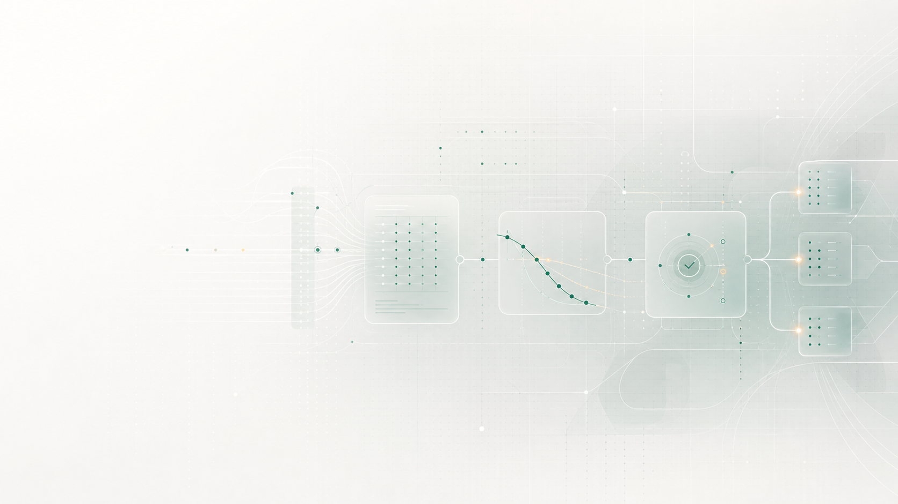
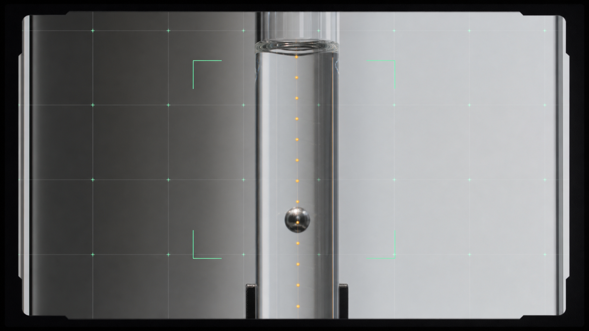
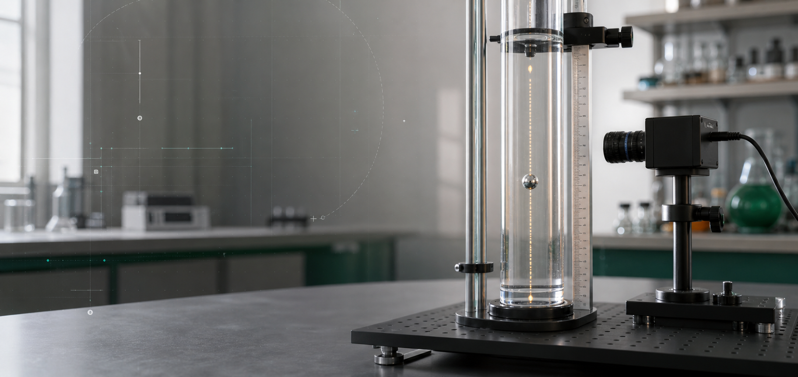

01 / Academic Flow
落球法测粘实验学习平台
按照预习测试、AI 测量、仿真对照、误差分析的顺序完成学习。

- 预习
- 测量
- 仿真
- 复盘
HOME DIRECTION BOARD
按照预习测试、AI 测量、仿真对照、误差分析的顺序完成学习。


像演示视频开场，强视觉冲击，适合答辩投屏第一页。
工程图纸式布局，强调链路、参数、可复现和装置边界。

本测试共 4 题，答对 3 题后进入实验大厅。

更像研究报道封面，适合把项目讲成“经典实验的智能化改造”。

极简海报风，用强网格和少量红色建立秩序。

像实验仪器操作台，强调模块状态、轨迹输入和计算输出。

手册、记录纸、实验指导书的感觉，更贴近教学场景。


玻璃、透明容器、折射补偿的视觉隐喻更强。
强对比、强结构、非常直接，适合想摆脱“模板感”。